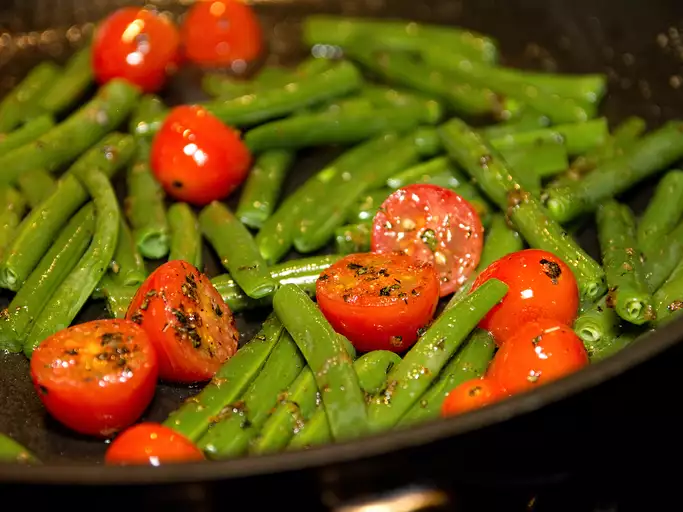

Great Beans Cherry Tomatoes

Description
Green Beans with Cherry Tomatoes is a vibrant and flavorful dish,
combining tender green beans with juicy cherry tomatoes for a delightful burst of color and freshness.
Ingredients
- 1 ½ pounds green beans, trimmed and cut into 2 inch pieces
- 1 ½ cups water
- ¼ cup butter
- 1 tablespoon sugar
- ¾ teaspoon garlic salt
- ¼ teaspoon pepper
- 1 ½ teaspoons chopped fresh basil
- 2 cups cherry tomato halves
Steps
- Place beans and water in a large saucepan. Cover, and bring to a boil. Set heat to low, and simmer until tender, about 10 minutes. Drain off water, and set aside.
- Melt butter in a skillet over medium heat. Stir in sugar, garlic salt, pepper, and basil. Add tomatoes, and cook, stirring gently just until soft.
- Pour the tomato mixture over the green beans, and toss gently to blend.